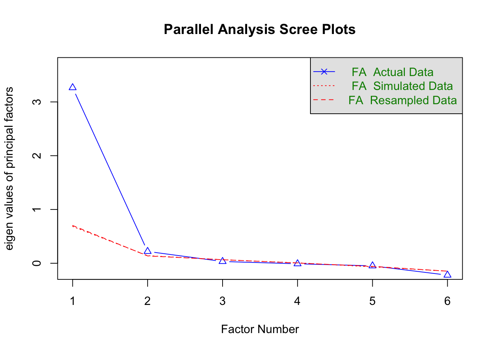
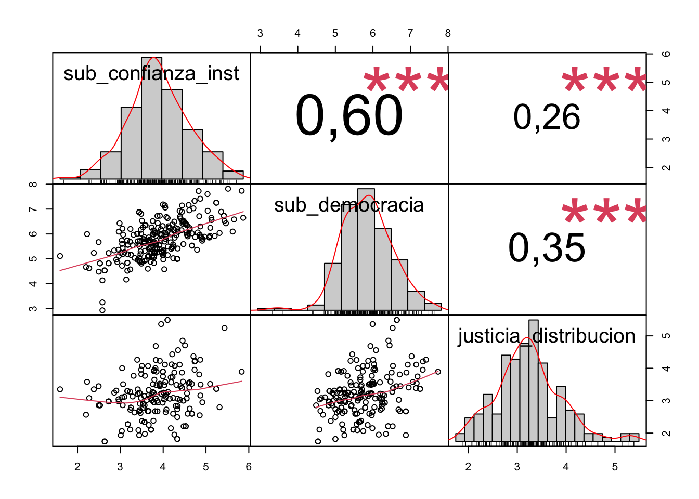

3 Cohesión Vertical
3.1 Descripción de las Variables
Se seleccionaron variables dentro de LAPOP que abordaran las subdimensiones definidas para la dimensión vertical de la Cohesión Vertical. Éstas incluyen pregunta sobre confianza en autoridades e instituciones, legitimidad del sistema democrático, participación cívica y política, percepciones de justicia, meritocracia y corrupación. A continuación se hace un resumen descriptivo de las variables seleccionadas.
| Variable | Estadísticas / Valores | Frec. (% sobre válidos) | Gráfico | Válido | Perdidos | |||||||||||||||||||||||||||||||||||||||||||||||||||||||
|---|---|---|---|---|---|---|---|---|---|---|---|---|---|---|---|---|---|---|---|---|---|---|---|---|---|---|---|---|---|---|---|---|---|---|---|---|---|---|---|---|---|---|---|---|---|---|---|---|---|---|---|---|---|---|---|---|---|---|---|---|
| pais [character] |
|
|
 |
256 (100,0%) | 0 (0,0%) | |||||||||||||||||||||||||||||||||||||||||||||||||||||||
| wave [numeric] |
|
11 valores distintos |  |
256 (100,0%) | 0 (0,0%) | |||||||||||||||||||||||||||||||||||||||||||||||||||||||
| reuniones_religiosas [numeric] |
|
175 valores distintos |  |
248 (96,9%) | 8 (3,1%) | |||||||||||||||||||||||||||||||||||||||||||||||||||||||
| asociaciones_padres [numeric] |
|
175 valores distintos |  |
248 (96,9%) | 8 (3,1%) | |||||||||||||||||||||||||||||||||||||||||||||||||||||||
| reuniones_comunidad [numeric] |
|
191 valores distintos |  |
251 (98,0%) | 5 (2,0%) | |||||||||||||||||||||||||||||||||||||||||||||||||||||||
| participa_part_politicos [numeric] |
|
172 valores distintos |  |
245 (95,7%) | 11 (4,3%) | |||||||||||||||||||||||||||||||||||||||||||||||||||||||
| part_protesta [numeric] |
|
120 valores distintos |  |
250 (97,7%) | 6 (2,3%) | |||||||||||||||||||||||||||||||||||||||||||||||||||||||
| juicio justo [numeric] |
|
199 valores distintos |  |
254 (99,2%) | 2 (0,8%) | |||||||||||||||||||||||||||||||||||||||||||||||||||||||
| respeto_instituciones [numeric] |
|
223 valores distintos |  |
254 (99,2%) | 2 (0,8%) | |||||||||||||||||||||||||||||||||||||||||||||||||||||||
| respeto_derechos_basicos [numeric] |
|
223 valores distintos |  |
254 (99,2%) | 2 (0,8%) | |||||||||||||||||||||||||||||||||||||||||||||||||||||||
| confianza_ffaa [numeric] |
|
174 valores distintos |  |
221 (86,3%) | 35 (13,7%) | |||||||||||||||||||||||||||||||||||||||||||||||||||||||
| confianza_congreso [numeric] |
|
204 valores distintos |  |
254 (99,2%) | 2 (0,8%) | |||||||||||||||||||||||||||||||||||||||||||||||||||||||
| confianza_policia_lapop [numeric] |
|
204 valores distintos |  |
254 (99,2%) | 2 (0,8%) | |||||||||||||||||||||||||||||||||||||||||||||||||||||||
| confianza_part_politicos_lapop [numeric] |
|
201 valores distintos |  |
254 (99,2%) | 2 (0,8%) | |||||||||||||||||||||||||||||||||||||||||||||||||||||||
| confianza_ejecutivo [numeric] |
|
173 valores distintos |  |
254 (99,2%) | 2 (0,8%) | |||||||||||||||||||||||||||||||||||||||||||||||||||||||
| confianza_gobiernos_locales [numeric] |
|
212 valores distintos |  |
251 (98,0%) | 5 (2,0%) | |||||||||||||||||||||||||||||||||||||||||||||||||||||||
| confianza_elecciones [numeric] |
|
138 valores distintos |  |
235 (91,8%) | 21 (8,2%) | |||||||||||||||||||||||||||||||||||||||||||||||||||||||
| igualdad_ingresos_lapop [numeric] |
|
161 valores distintos |  |
252 (98,4%) | 4 (1,6%) | |||||||||||||||||||||||||||||||||||||||||||||||||||||||
| apoyo_democracia [numeric] |
|
220 valores distintos |  |
254 (99,2%) | 2 (0,8%) | |||||||||||||||||||||||||||||||||||||||||||||||||||||||
| gente_comun [numeric] |
|
165 valores distintos |  |
254 (99,2%) | 2 (0,8%) | |||||||||||||||||||||||||||||||||||||||||||||||||||||||
| preocupacion_temas_importantes [numeric] |
|
164 valores distintos |  |
254 (99,2%) | 2 (0,8%) | |||||||||||||||||||||||||||||||||||||||||||||||||||||||
| satisfaccion_democracia [numeric] |
|
223 valores distintos |  |
254 (99,2%) | 2 (0,8%) | |||||||||||||||||||||||||||||||||||||||||||||||||||||||
| percepcion_corrupcion [numeric] |
|
171 valores distintos |  |
248 (96,9%) | 8 (3,1%) | |||||||||||||||||||||||||||||||||||||||||||||||||||||||
| participacion_elecciones [numeric] |
|
192 valores distintos |  |
254 (99,2%) | 2 (0,8%) | |||||||||||||||||||||||||||||||||||||||||||||||||||||||
| interes_politica [numeric] |
|
187 valores distintos |  |
254 (99,2%) | 2 (0,8%) | |||||||||||||||||||||||||||||||||||||||||||||||||||||||
| confianza_poder_judicial [numeric] |
|
46 valores distintos |  |
143 (55,9%) | 113 (44,1%) | |||||||||||||||||||||||||||||||||||||||||||||||||||||||
| agencia [numeric] |
|
26 valores distintos |  |
95 (37,1%) | 161 (62,9%) |
3.2 Indicadores de Democracia, Autoridad e Instituciones
3.3 Indicadores de participación política
Se debería eliminrar participación en elecciones, interés en polítca y participación en protestas, debido a sus bajas correlaciones.
3.4 Indicadores de Justicia y Corrupción
3.5 Análisis Factorial
Las correlaciones de las variables de participación son muy bajas o son negativas.
Tanto igualdad de ingresos como percepción de corrupción no muestran correlaciones fuertes con ninguna variable.

Kaiser-Meyer-Olkin factor adequacy
Call: KMO(r = subset)
Overall MSA = 0,85
MSA for each item =
confianza_congreso confianza_poder_judicial
0,81 0,92
confianza_part_politicos_lapop confianza_ejecutivo
0,82 0,93
apoyo_democracia satisfaccion_democracia
0,83 0,84 R was not square, finding R from data$chisq
[1] 780,4538
$p.value
[1] 0,000000000000000000000000000000000000000000000000000000000000000000000000000000000000000000000000000000000000000000000000000000000000000000000000000000000001274443
$df
[1] 15Tanto el KMO (0,85) como el test de esfercidad de Bartlett indican que los datos son adecuados para un análisis factorial.

Parallel analysis suggests that the number of factors = 2 and the number of components = NA El análisis paralelo sugiere 2 dimensiones
Factor Analysis using method = ml
Call: fa(r = subset, nfactors = 2, rotate = "none", fm = "ml")
Standardized loadings (pattern matrix) based upon correlation matrix
ML1 ML2 h2 u2 com
confianza_congreso 0,77 0,46 0,81 0,195 1,6
confianza_poder_judicial 0,62 0,49 0,509 1,5
confianza_part_politicos_lapop 0,79 0,43 0,81 0,194 1,6
confianza_ejecutivo 0,53 0,29 0,710 1,1
apoyo_democracia 0,65 0,43 0,567 1,0
satisfaccion_democracia 0,94 0,95 0,055 1,1
ML1 ML2
SS loadings 3,19 0,58
Proportion Var 0,53 0,10
Cumulative Var 0,53 0,63
Proportion Explained 0,85 0,15
Cumulative Proportion 0,85 1,00
Mean item complexity = 1,3
Test of the hypothesis that 2 factors are sufficient.
df null model = 15 with the objective function = 3,09 with Chi Square = 780,45
df of the model are 4 and the objective function was 0,02
The root mean square of the residuals (RMSR) is 0,01
The df corrected root mean square of the residuals is 0,03
The harmonic n.obs is 205 with the empirical chi square 1,3 with prob < 0,86
The total n.obs was 256 with Likelihood Chi Square = 3,92 with prob < 0,42
Tucker Lewis Index of factoring reliability = 1
RMSEA index = 0 and the 90 % confidence intervals are 0 0,094
BIC = -18,26
Fit based upon off diagonal values = 1
Measures of factor score adequacy
ML1 ML2
Correlation of (regression) scores with factors 0,98 0,88
Multiple R square of scores with factors 0,96 0,77
Minimum correlation of possible factor scores 0,92 0,53Los indicadores de ajuste son buenos. Sin embargo, la varianza explicada por el factor 2 es de solo 6%, y la varianza explicada total es de solo un 62%.
Loading required namespace: GPArotationFactor Analysis using method = ml
Call: fa(r = subset, nfactors = 2, rotate = "oblimin", fm = "ml")
Standardized loadings (pattern matrix) based upon correlation matrix
ML2 ML1 h2 u2 com
confianza_congreso 0,92 0,81 0,195 1,0
confianza_poder_judicial 0,67 0,49 0,509 1,0
confianza_part_politicos_lapop 0,88 0,81 0,194 1,0
confianza_ejecutivo 0,29 0,710 1,9
apoyo_democracia 0,58 0,43 0,567 1,1
satisfaccion_democracia 0,98 0,95 0,055 1,0
ML2 ML1
SS loadings 2,30 1,47
Proportion Var 0,38 0,25
Cumulative Var 0,38 0,63
Proportion Explained 0,61 0,39
Cumulative Proportion 0,61 1,00
With factor correlations of
ML2 ML1
ML2 1,00 0,74
ML1 0,74 1,00
Mean item complexity = 1,2
Test of the hypothesis that 2 factors are sufficient.
df null model = 15 with the objective function = 3,09 with Chi Square = 780,45
df of the model are 4 and the objective function was 0,02
The root mean square of the residuals (RMSR) is 0,01
The df corrected root mean square of the residuals is 0,03
The harmonic n.obs is 205 with the empirical chi square 1,3 with prob < 0,86
The total n.obs was 256 with Likelihood Chi Square = 3,92 with prob < 0,42
Tucker Lewis Index of factoring reliability = 1
RMSEA index = 0 and the 90 % confidence intervals are 0 0,094
BIC = -18,26
Fit based upon off diagonal values = 1
Measures of factor score adequacy
ML2 ML1
Correlation of (regression) scores with factors 0,96 0,98
Multiple R square of scores with factors 0,91 0,95
Minimum correlation of possible factor scores 0,83 0,90Mejoran los autovalores del factor 2 y da una solución clara. El factor 1 da cuenta de confianza en instituciones y el factor 2 en apoyo/satisfacción a la democracia.
Calcular puntajes
Ambas subdimensiones tienen una correlación de 0,63. Sin embargo, se debe considerar que esto solo respondería a una definición mínima de cohesión vertical, sin tomar en cuenta dimensiones de participación y justicia.
3.6 Modelo incluyendo indicadores de la WVS
Se incluyen indicadores de participación y justicia de la de la Encuesta Mundial de Valores. Para participación se incluyen indicadores de participación en protestas, huelgas y firmar peticiones. Para justicia se incluyen indicadores sobre la importancia de la igualdad de ingresos y del trabajo duro.
Kaiser-Meyer-Olkin factor adequacy
Call: KMO(r = .)
Overall MSA = 0,7
MSA for each item =
confianza_congreso confianza_poder_judicial
0,66 0,62
confianza_part_politicos_lapop confianza_ejecutivo
0,77 0,86
apoyo_democracia satisfaccion_democracia
0,75 0,82
firma_peticiones protestas_pacificas
0,59 0,64
participacion_huelgas
0,73 R was not square, finding R from data$chisq
[1] 655,8933
$p.value
[1] 0,0000000000000000000000000000000000000000000000000000000000000000000000000000000000000000000000000000000000000000006534494
$df
[1] 36KMO de 0,7 sugiere que los datos adecuados para un análisis factorial.
Parallel analysis suggests that the number of factors = 2 and the number of components = NA Factor Analysis using method = ml
Call: fa(r = subset, nfactors = 2, rotate = "oblimin", fm = "ml")
Standardized loadings (pattern matrix) based upon correlation matrix
ML2 ML1 h2 u2 com
confianza_congreso 0,90 0,79 0,21 1,0
confianza_poder_judicial 0,67 0,56 0,44 1,2
confianza_part_politicos_lapop 0,94 0,88 0,12 1,0
confianza_ejecutivo 0,58 0,37 0,63 1,5
apoyo_democracia 0,56 0,44 0,56 1,4
satisfaccion_democracia 0,85 0,75 0,25 1,0
firma_peticiones 0,83 0,79 0,21 1,1
protestas_pacificas 0,95 0,89 0,11 1,0
participacion_huelgas 0,93 0,86 0,14 1,0
ML2 ML1
SS loadings 3,60 2,72
Proportion Var 0,40 0,30
Cumulative Var 0,40 0,70
Proportion Explained 0,57 0,43
Cumulative Proportion 0,57 1,00
With factor correlations of
ML2 ML1
ML2 1,00 0,15
ML1 0,15 1,00
Mean item complexity = 1,2
Test of the hypothesis that 2 factors are sufficient.
df null model = 36 with the objective function = 8,28 with Chi Square = 655,89
df of the model are 19 and the objective function was 1,45
The root mean square of the residuals (RMSR) is 0,06
The df corrected root mean square of the residuals is 0,08
The harmonic n.obs is 84 with the empirical chi square 19,24 with prob < 0,44
The total n.obs was 84 with Likelihood Chi Square = 113,17 with prob < 0,0000000000000021
Tucker Lewis Index of factoring reliability = 0,707
RMSEA index = 0,243 and the 90 % confidence intervals are 0,202 0,289
BIC = 28,99
Fit based upon off diagonal values = 0,99
Measures of factor score adequacy
ML2 ML1
Correlation of (regression) scores with factors 0,97 0,97
Multiple R square of scores with factors 0,94 0,95
Minimum correlation of possible factor scores 0,89 0,89Calcular puntajes
Ni en la dimensión horizontal ni en la vertical, en este set de datos, la participación parece ser un factor ni una dimensión de cohesión social.
3.7 Modelo incluyendo indicador de justicia redistributiva de Latinobarometro
Se incluyó un indicador de Latinobarometro que pregunta sobre que tan justa se percibe la distribución de ingresos en el país.
Kaiser-Meyer-Olkin factor adequacy
Call: KMO(r = subset)
Overall MSA = 0,82
MSA for each item =
confianza_congreso confianza_poder_judicial
0,82 0,87
confianza_part_politicos_lapop confianza_ejecutivo
0,83 0,94
apoyo_democracia satisfaccion_democracia
0,80 0,80
justicia_distribucion
0,64 R was not square, finding R from data$chisq
[1] 883,4993
$p.value
[1] 0,00000000000000000000000000000000000000000000000000000000000000000000000000000000000000000000000000000000000000000000000000000000000000000000000000000000000000000000000000001717218
$df
[1] 21El test KMO y el de esfericidad de Bartlett indican que los datos son adecuados para un análisis factorial.
Parallel analysis suggests that the number of factors = 3 and the number of components = NA Factor Analysis using method = ml
Call: fa(r = subset, nfactors = 3, rotate = "none", fm = "ml")
Standardized loadings (pattern matrix) based upon correlation matrix
ML2 ML1 ML3 h2 u2 com
confianza_congreso 0,80 0,82 0,1770 1,6
confianza_poder_judicial 0,73 0,54 0,4586 1,0
confianza_part_politicos_lapop 0,80 0,79 0,2073 1,5
confianza_ejecutivo 0,42 0,32 0,6824 2,0
apoyo_democracia 0,61 0,56 0,4445 1,9
satisfaccion_democracia 0,67 0,50 0,82 0,1753 2,4
justicia_distribucion 1,00 0,99 0,0066 1,0
ML2 ML1 ML3
SS loadings 2,80 1,66 0,38
Proportion Var 0,40 0,24 0,05
Cumulative Var 0,40 0,64 0,69
Proportion Explained 0,58 0,34 0,08
Cumulative Proportion 0,58 0,92 1,00
Mean item complexity = 1,6
Test of the hypothesis that 3 factors are sufficient.
df null model = 21 with the objective function = 3,51 with Chi Square = 883,5
df of the model are 3 and the objective function was 0
The root mean square of the residuals (RMSR) is 0
The df corrected root mean square of the residuals is 0,01
The harmonic n.obs is 198 with the empirical chi square 0,13 with prob < 0,99
The total n.obs was 256 with Likelihood Chi Square = 0,44 with prob < 0,93
Tucker Lewis Index of factoring reliability = 1,021
RMSEA index = 0 and the 90 % confidence intervals are 0 0,03
BIC = -16,19
Fit based upon off diagonal values = 1
Measures of factor score adequacy
ML2 ML1 ML3
Correlation of (regression) scores with factors 0,96 1,00 0,78
Multiple R square of scores with factors 0,92 0,99 0,61
Minimum correlation of possible factor scores 0,84 0,99 0,23Buen ajuste. Vamos a rotar para ver si hay una solución clara.
Factor Analysis using method = ml
Call: fa(r = subset, nfactors = 3, rotate = "oblimin", fm = "ml")
Standardized loadings (pattern matrix) based upon correlation matrix
ML2 ML3 ML1 h2 u2 com
confianza_congreso 0,94 0,82 0,1770 1,0
confianza_poder_judicial 0,64 0,54 0,4586 1,3
confianza_part_politicos_lapop 0,85 0,79 0,2073 1,0
confianza_ejecutivo 0,32 0,6824 2,3
apoyo_democracia 0,79 0,56 0,4445 1,0
satisfaccion_democracia 0,77 0,82 0,1753 1,1
justicia_distribucion 0,99 0,99 0,0066 1,0
ML2 ML3 ML1
SS loadings 2,27 1,45 1,13
Proportion Var 0,32 0,21 0,16
Cumulative Var 0,32 0,53 0,69
Proportion Explained 0,47 0,30 0,23
Cumulative Proportion 0,47 0,77 1,00
With factor correlations of
ML2 ML3 ML1
ML2 1,00 0,73 0,30
ML3 0,73 1,00 0,32
ML1 0,30 0,32 1,00
Mean item complexity = 1,3
Test of the hypothesis that 3 factors are sufficient.
df null model = 21 with the objective function = 3,51 with Chi Square = 883,5
df of the model are 3 and the objective function was 0
The root mean square of the residuals (RMSR) is 0
The df corrected root mean square of the residuals is 0,01
The harmonic n.obs is 198 with the empirical chi square 0,13 with prob < 0,99
The total n.obs was 256 with Likelihood Chi Square = 0,44 with prob < 0,93
Tucker Lewis Index of factoring reliability = 1,021
RMSEA index = 0 and the 90 % confidence intervals are 0 0,03
BIC = -16,19
Fit based upon off diagonal values = 1
Measures of factor score adequacy
ML2 ML3 ML1
Correlation of (regression) scores with factors 0,96 0,93 1,00
Multiple R square of scores with factors 0,91 0,86 0,99
Minimum correlation of possible factor scores 0,83 0,72 0,99Se mantienen los factores relacionados a instituciones y democracia. El nuevo indicador aparece como un tercer factor independiente que explica el 16% de la varianza total.
Calcular puntajes

El indicador muestra correlaciones moderadas con los indicadores de democracia y confianza en las instituciones.